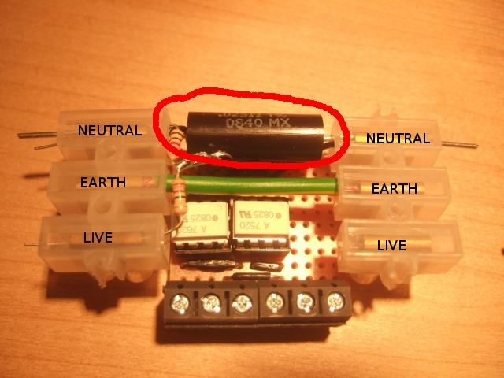

Current Sensing
The current in the mains supply is measured by placing a current sensing resistor in series with in this case the neutral wire. A current sensing resistor is a low resistance resistor with a high power rating. When current flows through a resistor there is a voltage drop across it: Ohms Law. This voltage is what is measured. The current sensing resistor looks like this:

The important design considerations here is what size current sensing resistor you need, a few values determine the size of the current sensing resistor you should go for:
- The maximum peak power you want to measure.
- The input voltage range of the isolators, -0.256 to +0.256 for the HCPL-7520.
- Power rating of the resistor.
The peak power can be a lot higher than the average power for example a lamp is rated at 60W will actually have a peak power of 120W and a laptop rated at 60W due to its switched mode power supply will have a peak power of many hundred watts.
Lets say we want to be able to measure a peak power of 3000W.
First we find the max peak current that gives us a peak power of 3000W:
Now that we have our peak current we use the value for the isolator voltage input range to find the ideal value for our resistor. Using Ohms Law:
The power dissipated in the resistor is given by:
The Power rating of the resistor should be a bit above this value. We then head over to farnells Ohmite current sensing resistor page to find a suitable resistor that fits these values: Farnel's Ohmite range
The Ohmite 13FR025E is the closest match it has a resistance of 0.025Ohms and therefore will allow us to measure a larger peak current value and therfore a larger peak power value.
The power dissipated in the resistor at this current:
This power is lower than the 3W rating of the resistor and so a 3W resistor would be fine, we could always go for the 5W resistor just to be safe. The peak power we can measure:
Therefore we can come to the conclusion that a 0.025Ohm 3W current sensing resistor such as the Ohmite 13FR025E is a good choice for our needs.